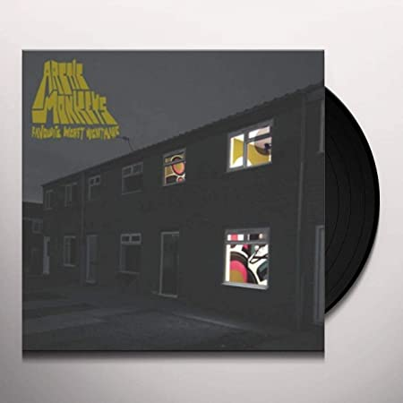
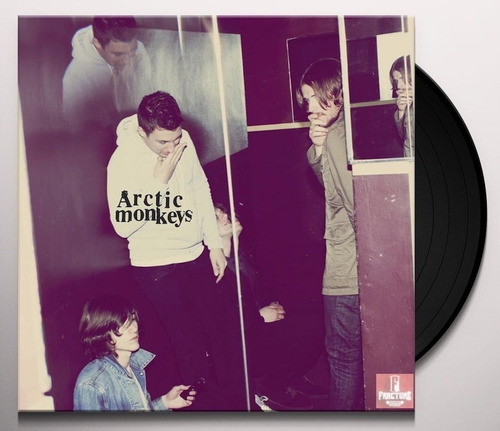
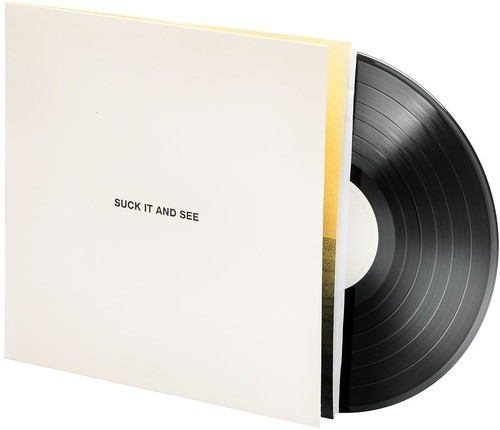
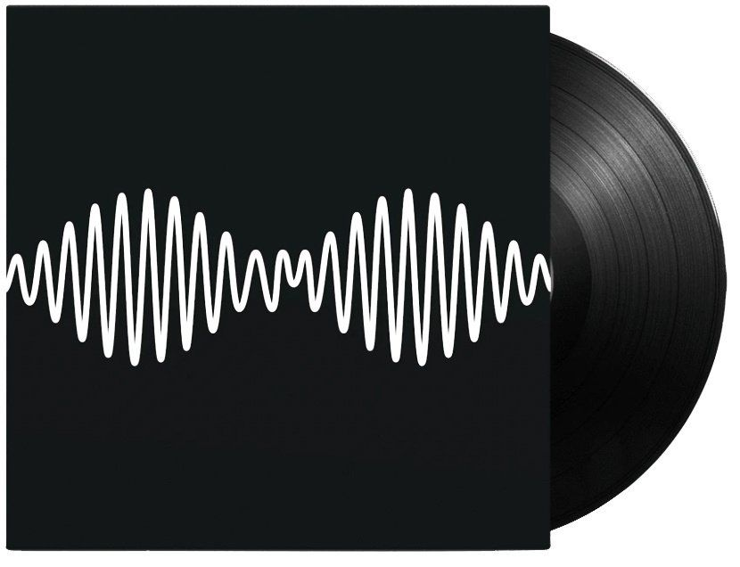
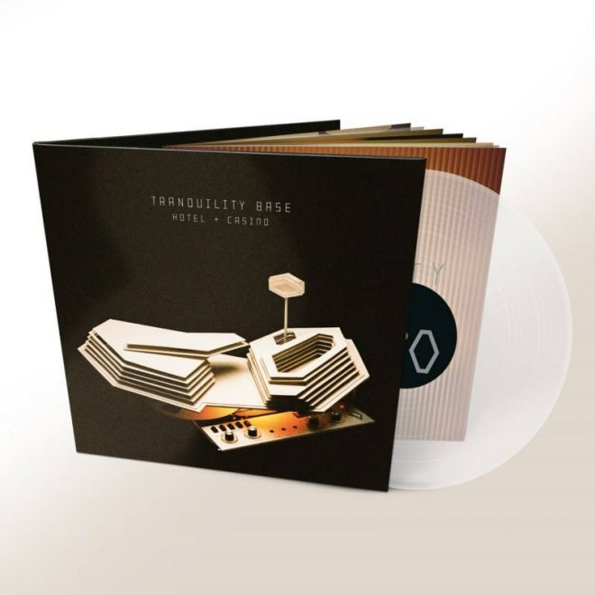
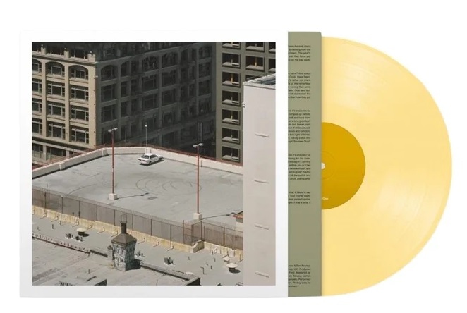

HISTORIA
En el barrio de Sheffield , en el Reino Unido, durante las Navidades del año 2001, se comenzó a formar el grupo Arctic Monkeys. La creación de dicho grupo vino como consecuencia de los regalos de unos instrumentos musicales que recibieron Alex Turner y Jamie Cook.
En aquel momento, estos miembros de la futura banda, comenzaron a pensar que debían de formar un grupo musical, por lo que llamaron a Andy Nicholson y Matt Helders, unos amigos de la escuela, para que formaran parte del mismo, tocando el bajo y la batería respectivamente.
El género musical de la banda va variando, según publican un EP, un single o un álbum, yendo su estilo desde el indie, ya bien sea pop o rock hasta el rock, alternativo o garage rock.
En el año 2003, el grupo comenzó a grabar numerosas demos y maquetas, con las que poco a poco conseguirían realizar actuaciones en diversos locales.
A mediados de ese mismo año, actuaron por primera vez en The Grapes en Sheffield, donde realizaron un buen concierto.
A partir de ese mismo momento la banda comenzó a grabar CDs, los cuales vendían sus propios miembros durante los conciertos y actuaciones.
La popularidad de la banda les llegó de imprevisto, ya que eran los propios fans los que colgaban las canciones de Arctic Monkeys en el portal MySpace, obteniendo un éxito arrollador de descargas.
Durante un concierto que el grupo musical realizó en el norte de Inglaterra, un periodista de la BBC realizó un documental sobre ellos, con entrevistas y emitiendo sus actuaciones, reportaje que fue publicado en Internet varias semanas después.
Esto significó para la banda el poder publicar su primer EP, “Five minutes with Arctic Monkeys”.
Poco después, el grupo firmó por una compañía discográfica, Domino Records, con la que comenzaron a ser muy famosos en el Reino Unido.
Comenzaron entonces a editar lo que seria su primer álbum, el cual llevó el título de “Whatever People Say I Am, That's What I'm Not”, y fue lanzado a finales de enero del 2006.
MIEMBROS
ALEX TURNER
Alexander David Turner (Sheffield, Inglaterra; 6 de enero de 1986) es un músico, compositor, cantante y productor discográfico británico, conocido por ser el vocalista de la banda Arctic Monkeys con la que ha lanzado seis álbumes. También ha publicado con su proyecto alternativo The Last Shadow Puppets y en solitario. Cuando tenía 16, junto a otros tres amigos formaron Arctic Monkeys en su natal Sheffield. Su álbum debut, Whatever People Say I Am, That's What I'm Not (2006), se convertiría en el álbum debut de venta más rápida en toda la historia del Reino Unido y sería posicionada en el número 30 de la lista "los mejores álbumes debut de todos los tiempos" de la revista Rolling Stone.
MATT HELDERS
Matthew Helders (Sheffield, 7 de mayo de 1986) es el baterista de la banda británica Arctic Monkeys. Es el corista más destacable, apareciendo en pistas como “You Probably Couldn’t See For The Lights But You Were Staring Straight At Me”, "I Bet You Look Good on the Dancefloor”, "Teddy Picker" y "D Is For Dangerous".
JAMIE COOK
Jamie Robert Cook (nacido el 8 de julio de 1985) es el guitarrista principal de Arctic Monkeys. Ganó fama por tocar una Fender Telecaster roja, la cual impactó en un amplificador en un programa de televisión en vivo cuando la banda apareció en “Saturday Night Live”. Al inicio de la carrera de la banda, Cook se uniría Matt Helders y Andy Nicholson en coros para las canciones como "Fake Tales of San Francisco ", pero actualmente evita cantar.
NICK O'MALLEY
Nicholas O'Malley (Sheffield, Inglaterra; 5 de julio de 1985) es el bajista de la banda británica Arctic Monkeys. O'Malley empezó a tocar el bajo a la edad de 16 años, luego de que sus ambiciones de tocar la batería y la guitarra fueran negadas por su padre. Antes de Arctic Monkeys, O'Malley tocaba el bajo en una banda de rock de garaje llamada The Dodgems.
DISCOGRAFIA
Whatever People Say I Am, That’s What I’m Not (2005)
Favourite Worst Nightmare (2007)
Humbug (2009)
Suck It and See (2011)
AM (2013)
Tranquility Base Hotel & Casino (2018)
The Car (2022)
VIDEOS
Mirá mas videos
CONTACTO
O podés comunicarte conmigo haciendo click en el siguiente ícono